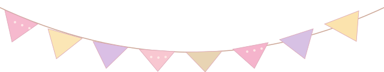
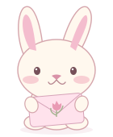

Temukan yang kamu suka
Menggambar, membaca, bermain, menari, atau mencoba hobi baru — nikmati rasa ingin tahumu. Kamu tidak harus langsung hebat untuk mulai menyukai sesuatu.

dari kak, untuk dede
Selamat ulang tahun ke-17

Ada kejutan kecil di balik pintu ini.
Siap membukanya, de?
dibungkus dengan doa baik & semangat 🌷
Sentuh di mana saja, lihat bintang kecilnya ✨

Selamat ulang tahun yang ke-17, dede! 🎂
Hari ini kak menyiapkan kejutan kecil untuk dede. Semoga bisa bikin dede tersenyum dan merasa diperhatikan. Terima kasih sudah menganggap kak sebagai kakakmu; kak senang bisa menjadi teman cerita dan ikut menyemangati dede.
Di usia 17 ini, semoga dede menemukan banyak hal yang menyenangkan: teman yang baik, hobi yang seru, dan langkah kecil menuju mimpi dede. Kak ikut mendukung, tapi dede boleh memilih arah dan berjalan dengan kecepatan sendiri. ✨
Jaga kesehatan, ya, de. Jangan lupa makan, tidur yang cukup, dan istirahat kalau capek. Nilai, tugas, atau hari yang kurang baik tidak mengurangi betapa berharganya dede. Kak berharap dede bisa memperlakukan diri sendiri dengan baik.
Dede masih remaja. Tidak perlu buru-buru menjadi dewasa, selalu kuat, atau tahu semua jawaban. Dede boleh bermain, penasaran, berubah pikiran, dan belajar pelan-pelan. Nikmati masa ini, ya.
Kalau suatu hari dede bingung atau sedih, boleh cerita ke kak saat dede ingin. Kak akan berusaha mendengarkan, tanpa menuntut dede harus selalu ceria. Dede juga boleh mencari dukungan dari keluarga atau teman yang dipercaya.
Semoga tahun ini membawa banyak tawa, pengalaman seru, dan hari-hari yang hangat. Selamat menikmati ulang tahunmu, de. Doa baik dan semangat dari kak untuk langkah-langkah kecil dede berikutnya. 🌱
17 tahun — masih boleh bermain, belajar, dan tumbuh pelan-pelan. 🌱
Semoga tahun baru dede dipenuhi tawa, teman yang baik, dan kesempatan untuk tumbuh dengan cara dede sendiri.
03 / tumbuh pelan-pelan juga boleh
Usia 17 bukan perlombaan. Masih ada waktu untuk mengenal dirimu, menikmati hal-hal kecil, dan menemukan apa yang kamu sukai.
Menggambar, membaca, bermain, menari, atau mencoba hobi baru — nikmati rasa ingin tahumu. Kamu tidak harus langsung hebat untuk mulai menyukai sesuatu.
Satu tugas selesai, satu hal baru dipahami, satu percobaan kecil. Langkah-langkah sederhana itu tetap layak dirayakan, bahkan saat hasilnya belum sempurna.
Tidak setiap hari harus produktif. Ada waktu untuk tertawa bersama teman, menikmati cerita favorit, dan beristirahat tanpa merasa bersalah.
Kalau bingung atau sedih, dede boleh meminta bantuan. Kak bisa menjadi teman cerita, dan dede juga boleh menghubungi keluarga atau teman yang dipercaya.
{{ wish.text }}
05 / simpan sedikit semangat
Kak titip 17 pesan kecil untuk dede. Buka kartu mana saja saat ingin membaca sedikit semangat atau pengingat yang baik.
Satu doa kecil untuk usia 17
{{ hasWished ? 'Doa untuk ' + selectedWish.toLowerCase() + ' sudah kak titipkan 🌷' : blowingCandles ? 'Fuuuh… satu per satu lilinnya padam!' : 'Pejamkan mata sebentar… lalu sentuh kuenya ✨' }}
{{ hasWished ? 'Lilin sudah padam. Kak ikut mendoakan yang baik untuk dede! ✨' : 'Buat permohonan dulu, de. Lalu sentuh kuenya untuk meniup lilin.' }}
07 / nikmati hari ini, de
Tidak harus pesta besar. Pilih hal-hal sederhana yang membuat hari ulang tahunmu terasa menyenangkan, lalu centang yang sudah kamu lakukan.
{{ completedPlans.length === birthdayPlans.length ? 'Semua momen kecil sudah dirayakan! Semoga harimu menyenangkan, de. 🌟' : completedPlans.length + ' dari ' + birthdayPlans.length + ' momen kecil sudah dirayakan. Santai saja, de. ✨' }}
08 / teman untuk hari bahagiamu
Satu melodi ulang tahun, ditemani doa baik dari kak.
Semoga nada kecil ini menemani senyum dede hari ini. Boleh ikut bernyanyi pelan, de. ♪
09 / buket semangat dari kak
Kak menyimpan lima tulip kecil di sini.
Masing-masing membawa satu pesan untuk dede.
Sentuh pita untuk membuka hadiahnya ✨
Sentuh setiap bunga untuk mengumpulkan pesannya.
{{ pickedTulips.length === 5 ? 'Buketnya lengkap! Semoga dede merasa ditemani hari ini. 💛' : pickedTulips.length + ' dari 5 tulip sudah terkumpul' }}
Dede, semoga usia 17 ini memberi banyak alasan untuk tersenyum, teman yang saling mendukung, dan kesempatan mencoba hal-hal yang dede suka. Kak ikut senang melihat setiap langkah kecil dede.
Jaga diri baik-baik, ya. Kalau capek, istirahat; kalau ingin cerita, boleh cerita ke kak. Tidak perlu jadi sempurna untuk membuat kak bangga. Tetap jadi diri dede sendiri. 🌱